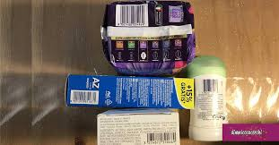

Il codice EAN
L'EAN o European Article Number, sono dei codici a barre utilizzati per la marcatura dei prodotti destinati alla vendita. E' un codice pluridimensionale dove sono presenti diversi spessori di barre o spazi.

Esistono diverse versioni di questo codice:
- EAN-13 "detto normale"
- EAN-8 "detto ridotto"
- EAN-2 usato nei periodici con l'EAN-13
- EAN-5 usato per la carta stampata
- EAN-32 o farmacode, è utilizzato, appunto, per identificare i medicinali
La struttura dei codici EAN è pressoché simile per tutte le versioni, di seguito è illustrata quella dell'EAN-13, quello più usato.
E' formato, come si può intuire, da 13 cifre: le prime 7 rappresentano la "Global Location Number", dove le prime 2 cifre sono per il codice identificativo della
nazione, le successive 5 rappresentano l'indirizzo del produttore o del fornitore; le 5 subito dopo, si riferiscono all'articolo stesso, mentre l'ultimo numero è
un numero di controllo calcolato moltiplicando le prime 12 cifre del codice alternativamente per 1 e per 3, sommando, poi, i valori ottenuti, la cifra di controllo è il più piccolo
numero da aggiungere a questa somma per ottenere un multiplo di 10.